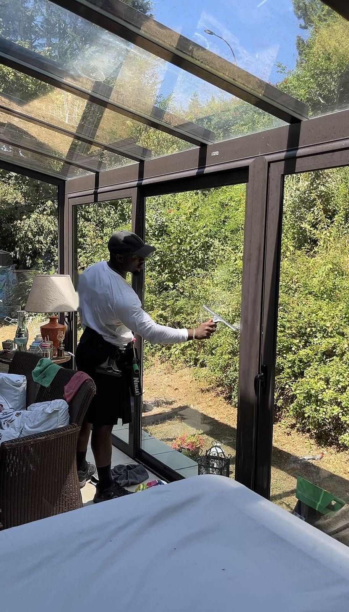

Vous ne réglez que la moitié.
Nos prestations à domicile ouvrent droit au crédit d'impôt « services à la personne » : 50 % de la facture vous est rendu par l'État. Avec l'avance immédiate de l'Urssaf, vous n'avancez même pas cette moitié.
Sur une facture de 100 €, vous en réglez 50.
L'autre moitié est prélevée par l'Urssaf, qui nous la verse directement. Vous ne faites aucune avance et vous n'avez rien à déclarer l'année suivante.
Dispositif officiel d'avance immédiate du crédit d'impôt, mis en place par l'Urssaf et la Direction générale des Finances publiques. Nous passons par la coopérative Unipros, qui garantit un cadre administratif conforme et sécurisé. L'inscription est gratuite et sans engagement.
Votre part
Réglée au moment de la prestation, comme n'importe quelle facture.
Pris en charge
Prélevés par l'Urssaf et versés directement à l'entreprise.
Quatre étapes,
une seule de votre côté.
Inscription
Nous vous inscrivons au dispositif. Vous validez votre compte Urssaf, gratuitement et sans engagement.
Intervention
Nous réalisons la prestation à votre domicile et émettons la facture.
Prélèvement
L'Urssaf vous prélève la moitié du montant, directement et en toute sécurité.
Terminé
Rien à avancer, rien à déclarer : l'autre moitié est réglée par l'État.
Jusqu'à quel montant ?
Le plafond est annuel et vaut pour l'ensemble de vos dépenses de services à la personne, tous prestataires confondus.
de crédit d'impôt par an, pour 12 000 € de dépenses annuelles.
Majoration de 1 500 € par personne au foyer, pour 15 000 € de dépenses.
de crédit d'impôt par an, pour 20 000 € de dépenses annuelles.
Concerné
- Lavage de vitres à votre domicile
- Nettoyage de canapés, matelas et tapis chez vous
- Toute prestation réalisée chez un particulier
Non concerné
- Locaux professionnels et commerces
- Prestations réalisées ailleurs qu'à votre domicile
Informations vérifiées en octobre 2026. Le crédit d'impôt services à la personne est maintenu intégralement pour 2026.
Profitez-en dès votre première intervention.
Nous nous occupons de l'inscription, vous n'avez qu'à la valider.
- Zone
- Val-d'Oise et toute l'Île-de-France, jusqu'au sud de l'Oise
- Disponibilité
- Joignable 7/7 · Interventions du lundi au samedi, créneaux en soirée possibles
- Téléphone
- 06 99 14 25 08